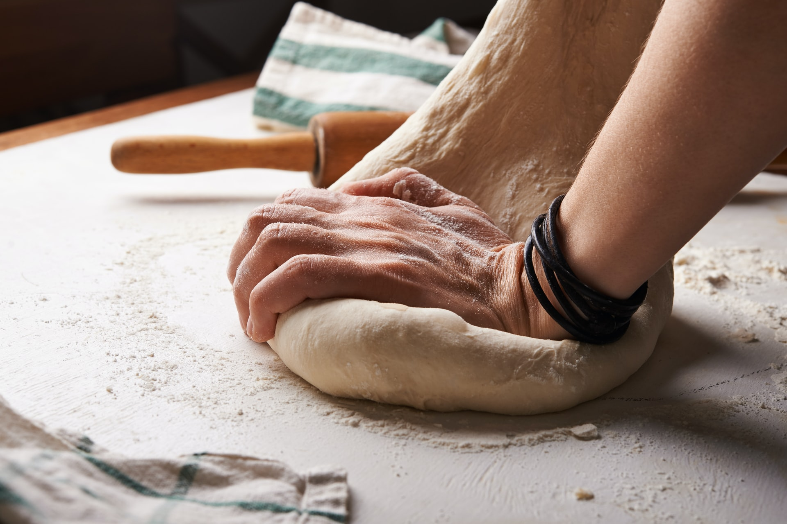
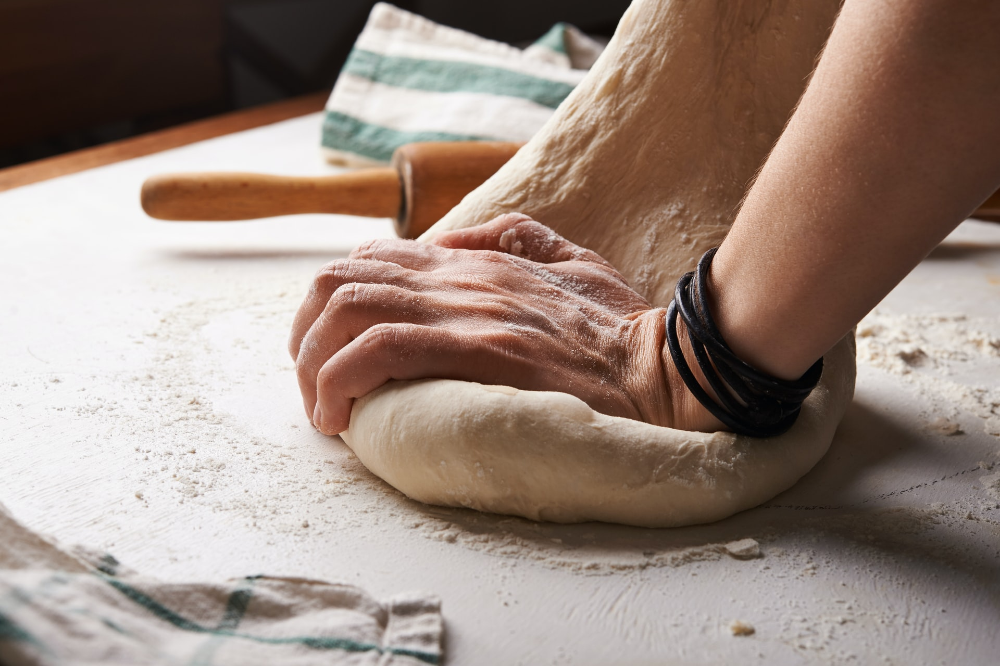

Megtalálhat minket a II. kerületi sétálóövezetben, a macskaköves úton. Üzletünket dél-itáliai stílusba öltöztettük, hogy autentikusabb élény tujdunk nyújtani.

Tavasszal és nyáron az üzlet előtt is el lehet fogyasztani pizzáinkat. Piros-fehér kockás terítőink és rusztikus bútoraink elrepítik önöket a dél-itáliai Bariba egy kellemes étkezés idejére.
Pizzáinkat eredeti olasz fatüzelésű kemecében készítjük el, ami a nap folyamán 400 °C-on ég, hogy Önöknek megfelelő minőségű pizzát tudjunk kínálni.
 
